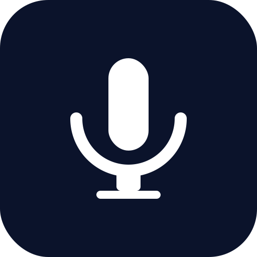

Supported
راهنما
دانلود PWA
قطع خودکار وقتی سکوت باشد
type به فارسی
type به انگلیسی
متن خروجی
راهنما
روی دکمه میکروفون کلیک کنید تا ضبط شروع شود. وقتی قرمز شد یعنی در حال ضبط است.
میتوانید زبان تشخیص را با دکمههای «type به فارسی» یا «type به انگلیسی» تغییر دهید.
اگر «قطع خودکار» فعال باشد، در صورت سکوت چند ثانیهای، ضبط متوقف میشود.
بعد از تبدیل گفتار به متن، از دکمههای «ویرایش» و «کپی» برای مدیریت متن استفاده کنید.
از دکمه شناور پایین راست برای تغییر بین تم روشن و تیره استفاده کنید.
برای نصب به صورت برنامه (PWA) از دکمه «دانلود PWA» استفاده کنید.
فهمیدم